Onda 4 · auditoria 20 → consertos · exame fotográfico · 1 Ago 2026
A auditoria 20 constatou; o «bora» consertou; hoje a casa dirigiu o app como um usuário e fotografou cada gesto. E onde a foto não alcança — o rastro invisível do conserto 7 — o teste segurou o fio da rede e capturou o evento saindo.
O que estas fotos são (e não são). Mundo hermético com estado: 12 itens de mentira (9 já lidos pela lente, 3 capturas cruas), banco de verdade intocado. O mock guarda o que cada gesto grava — quando a fila encolhe na foto, encolheu de verdade dentro do teste. O rito é idêntico ao de produção; os dados não são os teus. O teste com os 178 reais do inbox segue sendo teu, ao vivo — este exame prova os gestos, não substitui a vida.
O HOJE diz quantos esperam — estado, nunca badge que grita (D46). E o um a um continua sendo onde a leitura acontece na frente de quem assente (D69): o card do conector chega lido, visível e trocável.
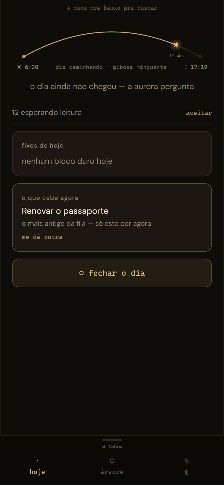
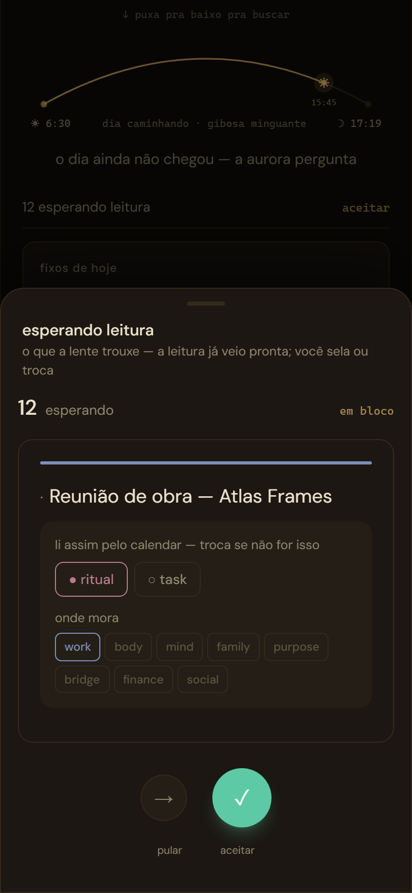
A regra que separa lote de atropelo: só entra no bloco o que já tem leitura visível. Cada linha mostra exatamente o que o card mostraria — type · module na cor do tipo. Captura crua diz «sem leitura» e não entra no aceite.
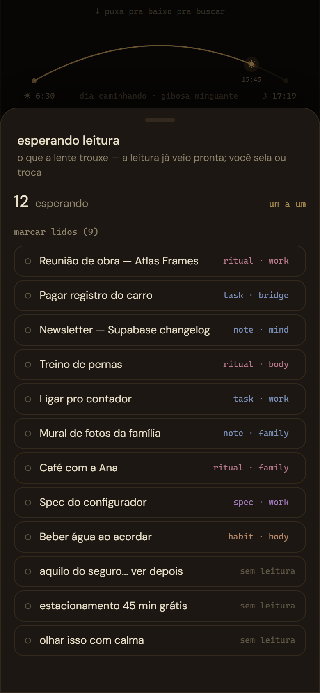
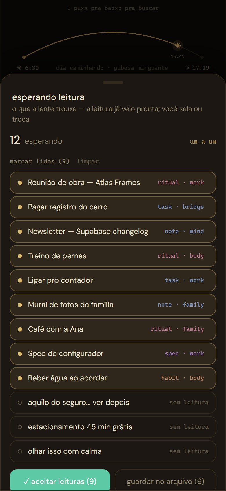
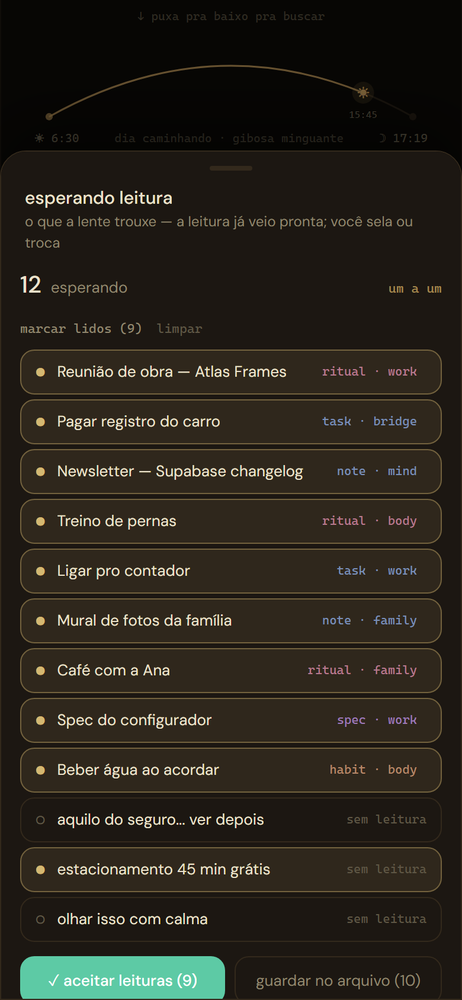
O selo segue sendo do humano (D69): cada leitura aceita estava visível na linha. Falha não anda — seria a esteira mentindo «assenti 9».
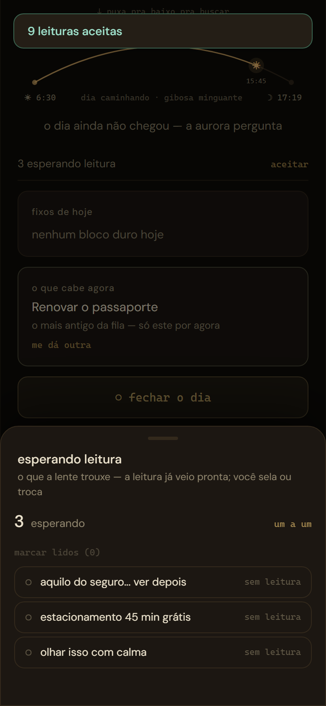
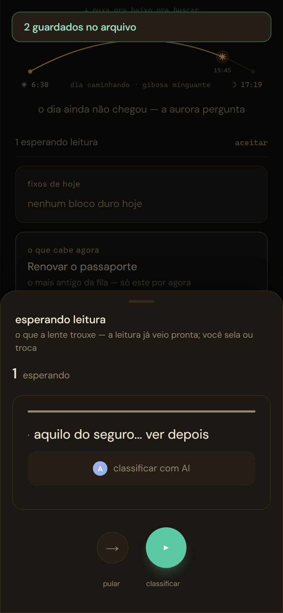
Os dois campos sempre existiram no schema (body.operations) — a semana e a busca já liam, faltava a boca. Agora são chips no detalhe: dar, trocar e limpar são gestos de primeira classe.
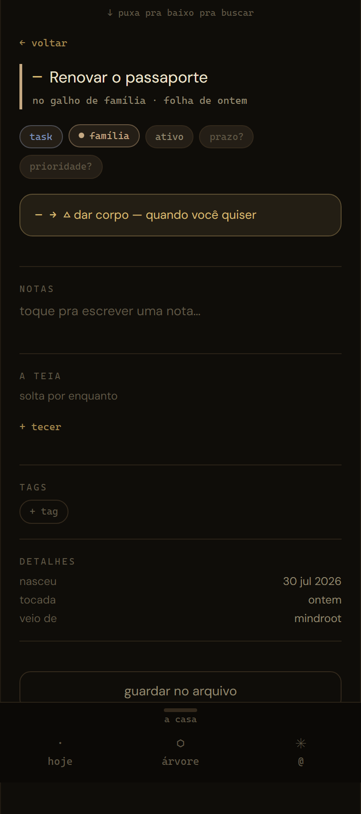
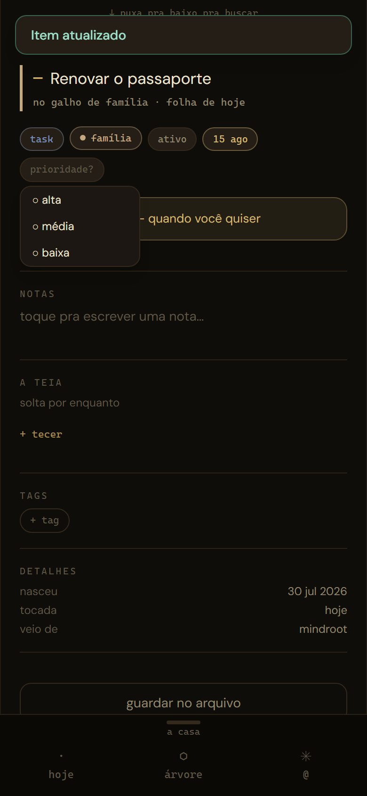
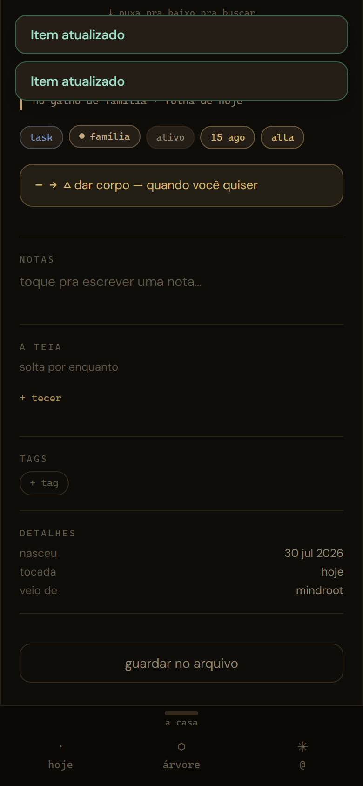
O convite do estágio 5 dizia «⬡ abrir pro mundo» e pulava direto pro 7. Agora diz o destino real. O destino do estágio 6 (ligar propagate_effect ou declará-lo fora) segue decisão aberta — mas rótulo não mente mais enquanto ela não vem.
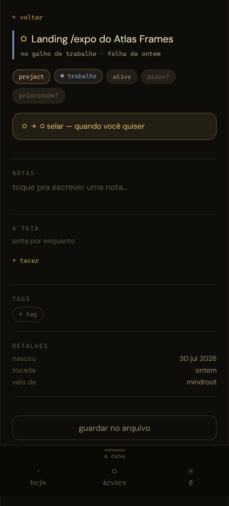
Conserto 7: concluir agora passa pela mutation que grava o rastro touch — o evento que o cofre e a Raiz leem pra dizer «faz tempo» (D63). É invisível na tela por desenho. Então o teste segurou o fio da rede e capturou o POST saindo no instante do «concluido»:
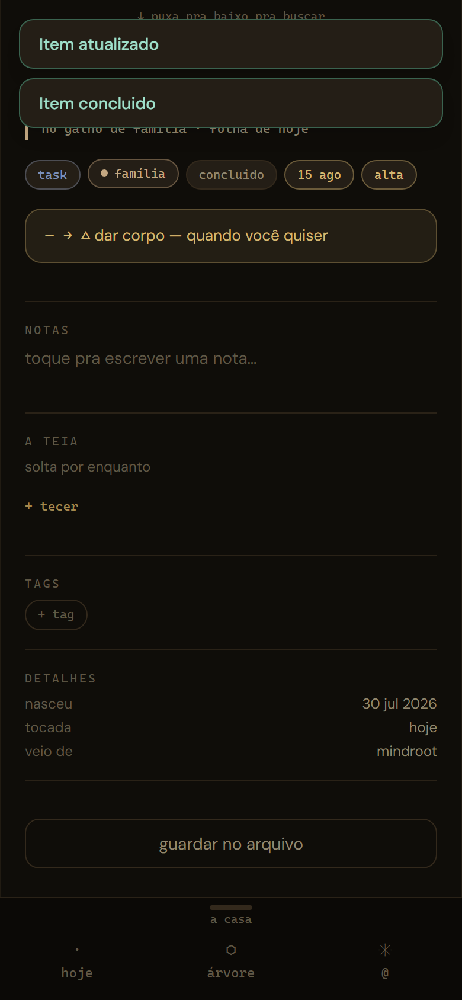
POST /rest/v1/atom_events ← capturado pelo teste, no clique { "source_id": "d-01", ← o item concluído "event_type": "touch", ← o toque de verdade que o cofre lê "target_id": null, "payload": {} }
De carona, a mesma mutation grava o last_completed da recorrência — o bug do hábito concluído pelo detalhe que nunca reabria morreu junto.
| Conserto (auditoria 20 § 7) | O que o exame provou | Estado |
|---|---|---|
| 1 · lote na esteira | em bloco → marcar lidos → aceitar/arquivar; fila 12 → 3 → 1; cru protegido do aceite | ✓ em produção |
| 2 · convite honesto | o 5 convida «⬠ → ○ selar» — o rótulo diz o destino real | ✓ em produção |
| 3 · prazo + prioridade | chips no detalhe: dar, trocar, limpar — «15 ago · alta» | ✓ em produção |
| 4 · drift dos vocabulários | indireto: spec · habit buscáveis e parseáveis nas fotos do bloco | ✓ em produção |
| 7 · eventos de verdade | o POST do touch capturado no fio no instante do «concluido» | ✓ em produção |